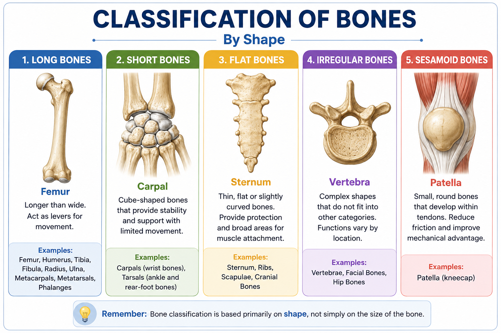

🦴 Classification of Bones
Bones can be classified according to their shape and structural characteristics. The five major shape-based categories are long, short, flat, irregular, and sesamoid bones.
🔵 How Are Bones Classified?
Bone shape is an important basis for classification. Different shapes are associated with different structural and functional roles in the skeleton.

📏 Long Bones
Long bones are generally longer than they are wide. They have a shaft and expanded ends and are commonly associated with movement and leverage.
Femur, humerus, tibia, fibula, radius, ulna, metacarpals, metatarsals, and phalanges.
🧊 Short Bones
Short bones are approximately cube-shaped. They provide stability and support while allowing limited movement.
🛡️ Flat Bones
Flat bones are generally thin, broad, and often slightly curved. They provide protection and broad areas for muscle attachment.
🧩 Irregular Bones
Irregular bones have complex shapes that do not fit well into the other major bone categories.
🔘 Sesamoid Bones
Sesamoid bones develop within tendons. They are usually small and rounded and can help protect a tendon and improve its mechanical advantage.
The patella is the largest sesamoid bone in the human body and is located within the quadriceps tendon at the knee.
📊 Compare the Bone Types
Use the table below to compare the five major shape-based categories.
| Type | Shape | Examples | Main role |
|---|---|---|---|
| Long | Longer than wide | Femur, humerus | Leverage & movement |
| Short | Cube-like | Carpals, tarsals | Stability & support |
| Flat | Thin and broad | Sternum, ribs, scapula | Protection & muscle attachment |
| Irregular | Complex shape | Vertebrae, facial bones | Support / protection |
| Sesamoid | Small, usually rounded; within tendons | Patella | Tendon protection & mechanical advantage |